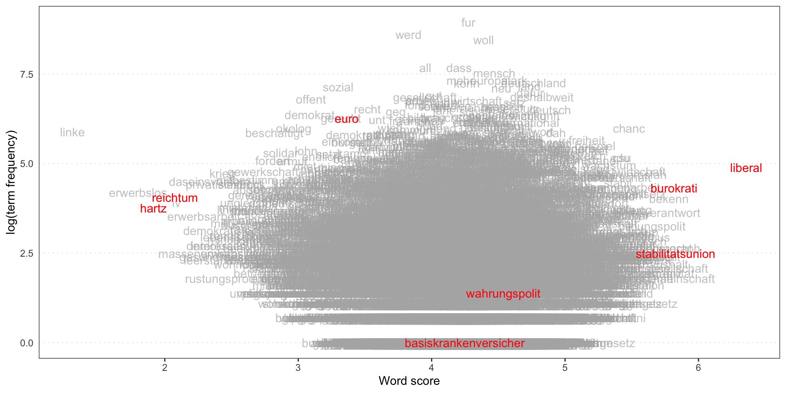
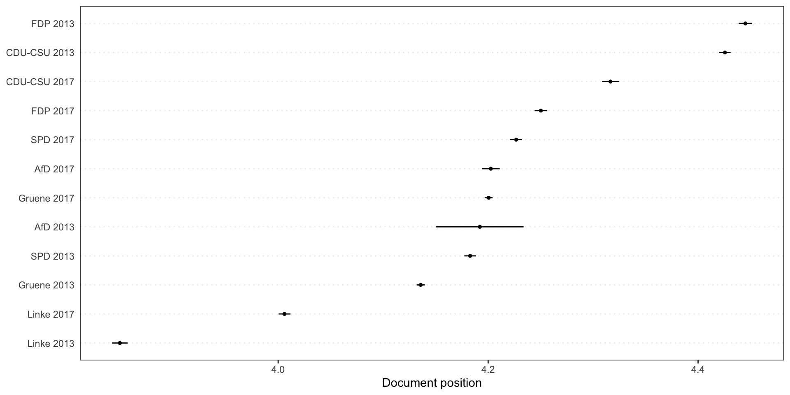
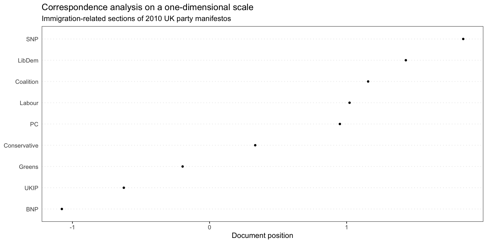
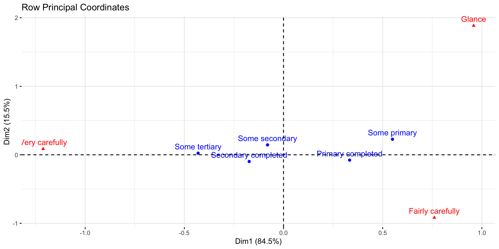

Advanced techniques in text analysis with R
Unsupervised text classification methods
Classification
Classification is a key aspect of both human and machine intelligence. Sentiment analysis, which involves identifying the positive or negative orientation expressed by an author towards a certain object, is a common example of text classification task. For example, a movie, book or product review on the internet conveys the author’s sentiment towards it, while an editorial or political article conveys sentiment towards a political candidate or action. The simplest form of classification is a binary classification task, such as determining if a text is positive or negative or if it is political or non-political.
Clustering
Clustering algorithms are unsupervised classification models used to group documents into categories. Clustering involves the use of similarity and dissimilarity measures to determine the subgroups within a set of observations. The labeling of these subgroups is then left up to the researcher. A widely used measure is Euclidean distance, the square root of the sum of the squared differences between the two vectors.
Single membership and mixed membership models
Single membership model and mixed membership models can be distinguished. In the case of a single membership model, it is assumed that each document belongs to only one category. This can be a restrictive assumption in many instances as a document may contain information about multiple categories. To address this, mixed membership models (also known as topic models) acknowledge that a document can be composed of a mixture of categories or topics.
Hierarchical clustering
Hierarchical clustering is a common type of clustering that groups or splits data points based on a chosen distance measure. The grouping process is sequential and results in a dendrogram, which visually displays the separation between the groups.
Text scaling
Manifest and latent characteristics
Textual analysis can focus on manifest or latent characteristics. Manifest characteristics can be observed in the text. Latent ones, can only be indirectly observed. For example, racist language used by a political speaker is directly manifest in the text, and the importance is whether it was used, not what it represents.
Dimensions like ideology, on the contrary, cannot be directly observed but they have an effect on the way the text has been generated, for example influencing concepts and word choice. The dimension itself cannot be observed, only its effects. However, can be estimated based on these observable effects. The goal of scaling methods is to use observable outcomes, like words, to infer an actor’s position on a latent dimension, like ideology or policy preferences.
Wordscores
Wordscores is a supervised text scaling method introduced in Laver, Benoit, and Garry (2003)1 and widely used among political scientists.
Researchers first identify reference texts known to represent the extremes of the political space (and possibly the center as well). This one-dimensional space is anchored by assigning reference values to the reference texts, ideally obtained from previous expert survey.
Wordscore estimates document positions of new texts by comparing them to these set of reference texts. The dimension of reference texts is defined by the analyst. It can derive, for example, from quantitive estimates made by experts. Wordscore then estimates the position of the new texts by comparing their words to the words of the reference texts.
Wordscores then counts the number of times each word occurs in the reference texts and compares these counts to word counts from the texts being analyzed. The manifestos are placed on a continuum between the refer- ence texts depending on how similar the word counts are to each reference text
Wordscores uses probabilities to infer the positions of new texts on a known dimension. The estimated position of a new text is updated as reference’s words are found. Its logic is similar to that of machine learning algorithms.
Benoit exemplifies the Wordscores implementation in Quanteda by using manifestos of the 2013 and 2017 German federal elections. The ref_score variable includes reference scores for 2013 German parties from the 2014 Chapel Hill Expert Survey, which estimate party positioning on ideology and policy issues. The problem is to measure the position of 2017 manifestos based on the 2013 data.
Wordscores is applied to the document-feature matrix.
The plot shows estimated word positions in the reference text, where word frequencies are on the y-axis and word-score are on the x-axis.
We predict the Wordscores for the other texts.

Step by step explanation
[1] "politics lemma euro lemma random"
[2] "politics lemma politics lemma words words"
[3] "euro euro lemma euro politics words random"[1] 2 3 NAGet the relative frequency of words in each text. The term “lemma” has frequency 0.4 because it appears in 2 out of 5 tokens.
Document-feature matrix of: 2 documents, 5 features (30.00% sparse) and 0 docvars.
features
docs politics lemma euro random words
text1 0.2000000 0.4000000 0.2 0.2 0
text2 0.3333333 0.3333333 0 0 0.3333333We can now calculate the probability of reading the first text given that we read, for example, the word “politics”: \(0.2/(0.2+0.3333333) = 0.375\). This is done for every word in the reference texts.
refTexts_prop <- t(refTexts_prop)
refTexts_prob <- refTexts_prop/rowSums(refTexts_prop)
refTexts_probDocument-feature matrix of: 5 documents, 2 features (30.00% sparse) and 0 docvars.
features
docs text1 text2
politics 0.3750000 0.6250000
lemma 0.5454545 0.4545455
euro 1.0000000 0
random 1.0000000 0
words 0 1.0000000The resulting probabilities are weighted by the reference score to get the word scores (e.g., \(ws_{politics} = (0.3750000*2) + (0.6250000*3) = 2.625\))
The score of the new text is the relative frequency of its words weighted by their word scores:
\[0.1428571*2.625000 + \\ 0.1428571*2.454545 + \\0.4285714*2.000000 +\\ 0.1428571*2.000000 + \\0.1428571*3.000000 =\\ 2.297078 \]
Wordfish
Wordfish is a scaling model of one-dimensional document positions1 which does not require reference scores/texts. In comparison to Wordscores, it is an unsupervised one-dimensional text scaling method that it estimates the positions of documents solely based on the observed word frequencies.
In their seminal paper where they proposed the WORDFISH scaling algorithm, Slapin & Proksch (2008) estimated the positions of German political parties from 1990 to 2005 using word frequencies in party manifestos. The extracted positions reflect changes in the party system more accurately than existing time-series estimates. In addition, the method allows researchers to examine which words are important for placing parties on the left and on the right. We find that words with strong political connotations are the best discriminators between parties.
Speeches and document-level variables from the debate over the Irish budget of 2010.
The corpus object for the 2010 budget speeches, with document-level variables for year, debate, serial number, first and last name of the speaker, and the speaker’s party. A detailed explanation of Wordfish can be found here.
Correspondence analysis
Correspondence analysis is a technique to scale documents on one or (usually) two or more dimensions. It is similar to principal component analysis but works for categorical variables (contingency table).
The objective of Correspondence Analysis (CA) is to simplify a data matrix by reducing its dimensionality and displaying it in a lower dimensional space, similar to Principal Component Analysis.
Model fitting
After the usual pre-processing steps, a CA model can be fitted using the Quanteda textmodel_ca function, optimized for large scale textual data1. An even more flexible library to fit CA models (and not only) is FactoMineR.
Visualization
The resulting model can be represented on a one-dimensional or bi-dimensional scale.
Choice of dimensions
CA models extract several dimensions from the data. Retain for interpretation the dimensions that cumulative explain most of the variance is common choice. Simple formulas have also been suggested in literature to select only the significant axes, defined as those whose explained variance is higher what would be expected by chance: \(max(\frac{100}{N_{row}}, \frac{100}{N_{col}})\))1.
numeric(0)Interpretation
Dim1 Dim2 Dim3
immigrants -1.4757253 1.09261013 0.5362865
uk -1.3571230 0.01572683 -0.4667974
illegal -1.2923156 0.69105066 0.6747134
british -1.2849680 0.17789721 1.1576895
national -0.8665846 0.29604152 0.7113248 Dim1 Dim2 Dim3
migrants 1.474483 -0.3799395 -0.79485323
system 1.718433 0.5760113 1.02632056
economy 1.907573 -1.0411265 0.27259065
end 1.950402 0.3008484 0.05516631
detention 2.539934 2.2957806 -2.30526219Step by step explanation
Category of readership
Level of education Glance Fairly carefully Very carefully
Some primary 5 7 2
Primary completed 18 46 20
Some secondary 19 29 39
Secondary completed 12 40 49
Some tertiary 3 7 16Sum up all the values in the table and get the proportions
Category of readership
Level of education Glance Fairly carefully Very carefully
Some primary 0.016025641 0.02243590 0.006410256
Primary completed 0.057692308 0.14743590 0.064102564
Some secondary 0.060897436 0.09294872 0.125000000
Secondary completed 0.038461538 0.12820513 0.157051282
Some tertiary 0.009615385 0.02243590 0.051282051Get the sum of columns and rows. Glance describe the reading habits of 18.3% of the sample and some primary education is held by 4.5% of the sample.
Glance Fairly carefully Very carefully
0.1826923 0.4134615 0.4038462 Some primary Primary completed Some secondary Secondary completed
0.04487179 0.26923077 0.27884615 0.32371795
Some tertiary
0.08333333 Referring back to the original table of proportions, 1.6% of people glanced and had some primary education. Is this number big or small? We can compute the value that we would expected to see under the assumption that there is no relationship between education and readership. The proportion that glance at a newspaper is 18.2% and 4.5% have only Some primary education. Thus, if there is no relationship between education and readership, we would expect that 4.5% of 18.2% of people (i.e., 0.008 = 0.8%) have both glanced and have primary education.
To get the expected values, we multiply each of the row totals (“row masses”) by each of the column totals (“column masses”).
Glance Fairly carefully Very carefully
Some primary 0.008197732 0.01855276 0.01812130
Primary completed 0.049186391 0.11131657 0.10872781
Some secondary 0.050943047 0.11529216 0.11261095
Secondary completed 0.059140779 0.13384492 0.13073225
Some tertiary 0.015224359 0.03445513 0.03365385We compute the residuals by subtracting the expected proportions from the observed proportions. The residuals quantify the difference between the observed data and the data we would expect under the assumption that there is no relationship between the row and column categories of the table (i.e., education and readership, in our example). The biggest residual is -0.045 for Primary completed and Very thorough.
Category of readership
Level of education Glance Fairly carefully Very carefully
Some primary 0.007827909 0.003883136 -0.01171105
Primary completed 0.008505917 0.036119329 -0.04462525
Some secondary 0.009954389 -0.022343442 0.01238905
Secondary completed -0.020679241 -0.005639793 0.02631903
Some tertiary -0.005608974 -0.012019231 0.01762821By ignoring the number of people in each of the rows and columns, we end up being most likely to find results only in rows and columns with larger totals (masses). We can solve for this problem by dividing the residuals by the expected values, which gives us a table of indexed residuals (I). The indexed residuals have a straightforward interpretation. The further the value from the table, the larger the observed proportion relative to the expected proportion.
Category of readership
Level of education Glance Fairly carefully Very carefully
Some primary 0.9548872 0.20930233 -0.6462585
Primary completed 0.1729323 0.32447398 -0.4104308
Some secondary 0.1954023 -0.19379845 0.1100164
Secondary completed -0.3496613 -0.04213677 0.2013201
Some tertiary -0.3684211 -0.34883721 0.5238095The biggest value on the table is the .95 for Some primary and Glance. This tells us that people with some primary education are almost twice as likely to Glance at a newspaper as we would expect if there were no relationship between education and reading. Reading along this first row, we see that there is a weaker, but positive, indexed residual of 0.21 for Fairly thorough and Some primary. This tells us that people with some primary education were 21% more likely to be fairly thorough readers that we would expect.
Category of readership
Level of education Glance Fairly carefully Very carefully
Some primary 0.9548872 0.20930233 -0.6462585
Primary completed 0.1729323 0.32447398 -0.4104308
Some secondary 0.1954023 -0.19379845 0.1100164
Secondary completed -0.3496613 -0.04213677 0.2013201
Some tertiary -0.3684211 -0.34883721 0.5238095The further the point is from the origin, the stronger the associations between that point and the other points on the map. E.g., Glance is the one which is most discriminating in terms of the readership categories.
Also, when you have a small angle from the lines connecting the points to the origin, the the association is relatively strong (i.e., a positive indexed residual). When there is a right angle there is no association (i.e., no residual). When there is a wide angle, a negative residual is the outcome.
People with only Primary completed are relatively unlikely to be Very carefully Those with Some primary are more likely to Glance. People with Primary completed are more likely to be Fairly thorough. The more education somebody has, the more likely they are to be Very thorough

Supervised classification methods
Naive Bayes
Naive Bayes is a machine learning approach for categorizing documents into various groups (two or more) through a supervised learning process. The classifier is trained using previously labeled documents, and is then used to predict the most probable category for new, unlabeled documents.
Quanteda offers a quick way to fit Naive Bayes models. Let’s follow the built-in example.
The data_corpus_moviereviews from the quanteda.textmodels package includes 2000 movie reviews that have been classified either as “positive” or “negative” (variable “Sentiment”).
Corpus consisting of 2000 documents, showing 5 documents:
Text Types Tokens Sentences sentiment id1 id2
cv000_29416.txt 354 841 9 neg cv000 29416
cv001_19502.txt 156 278 1 neg cv001 19502
cv002_17424.txt 276 553 3 neg cv002 17424
cv003_12683.txt 313 555 2 neg cv003 12683
cv004_12641.txt 380 841 2 neg cv004 12641Validation
In supervised machine learning, there is always a training and evaluation stage where the performance of the model is assessed. There are various evaluation techniques, the most basic of which involves dividing the labeled data into a training and test set.
For this demonstration, we randomly select 1500 reviews (75% of the labeled data) to be used as the training set, and the remaining 500 reviews (25%) will be the test set. Using the training set, we construct a Naive Bayes classifier. In the next step, we will use this classifier to predict the sentiment of the remaining reviews, which make up our test set.
Training
We then create the usual Document Feature Matrix dfm.
# create an ID for each item in the corpus
corp_movies$id_numeric <- 1:ndoc(corp_movies)
# tokenize and create the dfm
toks_movies <-
quanteda::tokens(corp_movies,
remove_punct = TRUE,
remove_number = TRUE) %>%
tokens_remove(pattern = stopwords("en")) %>%
tokens_wordstem()
dfmt_movie <- dfm(toks_movies)We then create two dfm subset, one for the training and one for the test set.
Naive Bayes can consider only features that appear in both the training and test sets. Hence, we need to make the features identical using dfm_match.
Fit the model
We now train the naive Bayes classifier using the Quanteda function textmodel_nb().
We now use the trained Naive Bayes model to predict the labels of the test set.
The cross-table reveals that there are equal numbers of false positives and false negatives, indicating that the classifier made mistakes in both directions without consistently over- or under-estimating either class.
predicted_class
actual_class neg pos
neg 213 45
pos 37 205 predicted_class
actual_class neg pos
neg 0.8255814 0.1744186
pos 0.1528926 0.8471074The function confusionMatrix() from the caret package to assess the performance of the classification.
Confusion Matrix and Statistics
predicted_class
actual_class neg pos
neg 213 45
pos 37 205
Accuracy : 0.836
95% CI : (0.8006, 0.8674)
No Information Rate : 0.5
P-Value [Acc > NIR] : <2e-16
Kappa : 0.672
Mcnemar's Test P-Value : 0.4395
Sensitivity : 0.8200
Specificity : 0.8520
Pos Pred Value : 0.8471
Neg Pred Value : 0.8256
Precision : 0.8471
Recall : 0.8200
F1 : 0.8333
Prevalence : 0.5000
Detection Rate : 0.4100
Detection Prevalence : 0.4840
Balanced Accuracy : 0.8360
'Positive' Class : pos
Precision, recall and the F1 score are frequently used to assess the classification performance.
Precision is TP / (TP + FP), where TP are the number of true positives and FP are the false positives. Recall divides the true positives by the sum of true positives and false negatives TP / (TP + FN). Finally, the F1 score is a harmonic mean of precision and recall 2 * (Precision * Recall) / (Precision + Recall).
ReadMe2
The originary ReadMe algorithm has been developed by Hopkins & King (2010) to estimate the proportion of unlabeled documents within given categories starting from a categorization scheme chosen by the user (e.g., sentiment ratings, policy topics, or any other mutually exclusive and exhaustive set of categories) and a small subset of text documents hand classified into the given categories.
The central intuition of the original
readmeis that for any individual feature S in both the labeled and unlabeled set, we know that the average value of that feature S is equal to the sum of the conditional expectation of S in each category multiplied by the share of documents in that category. While we observe the average of S in the unlabeled set, we do not observe the conditional expectations of S. We estimate these conditional expectations using the labeled set conditional frequency and solve for the unlabeled set proportions via standard linear programming methods.
There are many possible features S that can be extracted from the text. The main contribution of
readme2is to develop a way for selecting optimal sets of features from a large space of potential document summaries, morphing the space in which the readme regression is run to yield the best possible estimates of the category proportions. We begin by converting each document into a vector of summaries based on the word vector representations of each term in the document1.
ReadMe2 is a recent and improved version of the algorithm by Jerzak, King, & Strezhnev (2018). It uses pre-trained dictionaries of word vectors as part of the process of translating the words in documents to a numerical representation.
To work with package, a Python installation as well as several additional packages (and downloads) are required, such as tensorflow, an R interface to TensorFlow API, an open source machine learning library; the pre-trained dataset Stanford GloVe: Global Vectors for Word Representation; a neural network transformer models via the text package.
In the provided example, the Clinton dataset of blog posts was used to demonstrate the method. It consists of 1,676 documents categorized into 6 mutually exclusive categories (“TRUTH”).
The undergrad function takes the raw document texts and a word vector dictionary as input and convert the raw text into a document-feature matrix. The default word vector used is the Stanford GloVe pre-trained dataset. The undergrad function returns a set of feature summaries for each document after pre-processing the text.
Recently (2023) a new option was added to obtain document-level features using neural network transformer models, such as GPT or BERT, using the textEmbed function from the text package.
Estimate
Finally, the estimated proportions can be computed.
Validate
The model can be validated against the actual categories.
# Output proportions estimate
est <- readme.estimates$point_readme
# Compare to the truth
true <-
table(clinton$TRUTH[clinton$TRAININGSET == 0]) / sum(table((clinton$TRUTH[clinton$TRAININGSET == 0])))
res <- data.frame(ESTIMATE = as.numeric(est),
REAL = as.numeric(true))
rownames(res) <- c("-2", "-1", "1", "2", "3", "4")
res <- t(as.matrix(res))
barplot(
height = res,
beside = T,
legend.text = c("estimates", "real"),
args.legend = list(x = "topleft")
)Named entity recognition
Apache OpenNLP Maxent
library(rvest)
page = read_html('https://en.wikipedia.org/wiki/Berkshire_Hathaway')
text = html_text(html_nodes(page,'p'))
text = text[text != ""]
text = gsub("\\[[0-9]]|\\[[0-9][0-9]]|\\[[0-9][0-9][0-9]]","",text) # removing refrences [101] type
# Make one complete document
text = paste(text, collapse = " ")
text = as.String(text)sent_annot = Maxent_Sent_Token_Annotator()
word_annot = Maxent_Word_Token_Annotator()
people_annot = Maxent_Entity_Annotator(kind = "person") #annotate person
loc_annot = Maxent_Entity_Annotator(kind = "location") #annotate location
annot.l1 = NLP::annotate(text, list(sent_annot,word_annot,loc_annot,people_annot))
k <- sapply(annot.l1$features, `[[`, "kind")
berk_locations = text[annot.l1[k == "location"]]
berk_people = text[annot.l1[k == "person"]][1] "Warren Buffett" "Charlie Munger" "Heinz Company" "Oliver Chace"
[5] "Samuel Slater" [1] "Omaha" "Nebraska" "United States"
[4] "Valley Falls Company" "Valley Falls"